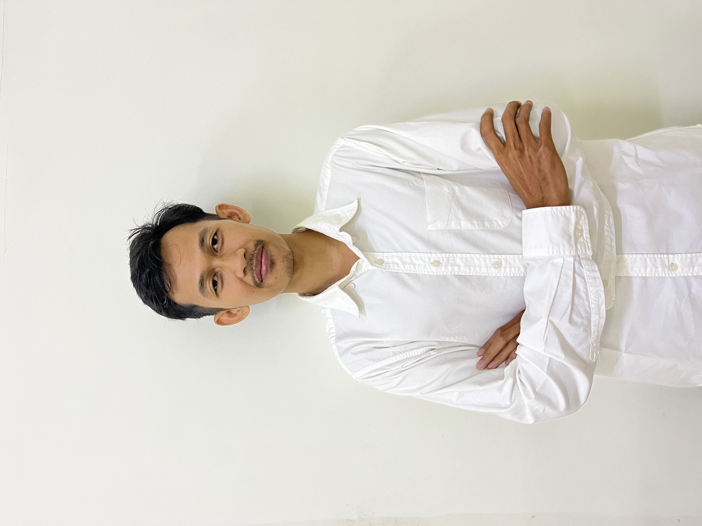

CV Elektronik • Rizal Kurniawan
Rizal Kurniawan
Teller & Staf IT
Programmer komputer dengan pengalaman sekitar 7 tahun dalam pengembangan, instalasi, maintenance, dan dukungan teknis. Terbiasa bekerja kolaboratif maupun mandiri, menjaga kualitas kode, serta menyelesaikan pekerjaan dengan rapi dalam tenggat waktu yang ketat.
7 Tahun
Pengalaman kerja & dukungan IT
S1
Teknik Informatika
Kediri
Jawa Timur

Deskripsi Diri
Memiliki minat kuat pada pengembangan aplikasi, analisis data, jaringan, instalasi software, dan perawatan perangkat komputer. Terbiasa membantu kebutuhan operasional tim, menyusun solusi teknis, serta menjaga layanan tetap berjalan dengan baik.